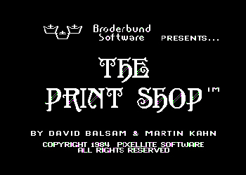

Slick, Pristine, and Pretty.
Or: How I Became a Graphic Designer
Published in FAQNP: A Queer Nerd Publication, April 2010
First off, let me just say—this is not going to be anything as auspicious or acceptable as, say, the tale of a design prodigy’s love affair with Helvetica, that elegant Swiss workhorse of the Modern era. No, in the unquestionably inelegant home where I was reared—for the family that cut its teeth in the digital age first with Windows 3.1 and later, thrillingly, Windows 95—it was Arial all the way.[1]
I was blissfully ignorant of what I was missing in the realm of typography. Every correspondence I could conceive of needing to formulate, every sentiment I would ever be compelled to express, I could fully capture in Arial, Courier, or Times New Roman. What were the other choices? Verdana, Palatino, Trebuchet? Three fonts maxed out the brain of this uninitiated naïf.
It wasn’t until the advent of Windows 98 (my sophomore year) that my palette was broadened—like Dorothy stepping beyond her sepia Kansas doorstep into Technicolor Oz—to include two more earth-shattering design options: Impact[2] and Copperplate. Once I had them in my drop-down menu, I didn’t know how I ever lived without. Impact for those special times when you want to make an—ahem—well, you know. (And when you’re a closeted fifteen-year-old dreaming of making it as an artist, when are you not going for maximum impact?) I guess the answer would be for all of those more refined, stately affairs for which you’re charged with creating the perfect invitation. It was then that Copperplate showed its strength. With its wide letterforms, understated serifs, and continuous stroke width, Copperplate struck the ideal balance between manly and frilly—butch and femme, if you will.
I realize I’ve gone quite deep into my typographic biography without dealing with the glaring question: What, pray tell, is this nascent-pansy fifteen-year-old in the above paragraphs so busy designing, anyway, with his growing catalogue of fonts? Well. That, dear reader, is where we get to the meat of the story. You see, at first I dreamt of becoming an artist. That meant doodles, which lead to sketchbooks, which lead to colored-pencils on “nice” paper, which lead to a brush, easel, and some truly horrific acrylics-on-canvas.
Some time in middle-school, that dream sort of ran up against this beige machine now sitting against the wall in the den, with Windows 3.1 installed. This run-in began with experiments in MS Paint, where I was enraptured with its twenty-eight–color palette and paint bucket and airbrush[!]. After a couple sessions, though, and a dozen or so printouts on the bubble jet, there was one major issue with the program I couldn’t seem to get around: How to make anything that looked any good?
I mean, let’s be serious. One could have boundless God-given talent in the fine- and applied-arts, and yet anything made with this particular piece of software came out looking like absolute crap. The tools so unwieldy! The workspace so ill-defined! The clicks and strokes maddeningly un-editable, unlike everything else on the computer! (Or was our inaccurate roller-ball mouse the true culprit?)
In any case, my love of MS Paint was short lived. Then a month or so after passions cooled, on a seemingly uneventful stop at the Walgreen’s stationery aisle, I was stopped cold by a tall black kiosk. It had a keypad down low, monitor up above, and in between, a clear pane with a well-lit sheet of paper at a forty-five–degree angle, and a little stylus on tracks—so much more handsome than the PC back home. The whole effect was that of a graphic-design jukebox.
This futuristic dream machine was called—it said up top: CreataCard! by American Greetings. The interface let you first choose your occasion: birthday, anniversary, whatever. Then you select from a bevy of smart-looking pre-formatted designs, and then—here’s the kicker—you can customize the text of the card. Instead of writing your message in ballpoint, everything you had to say could be printed right into the design. No room for human error: no sloppy handwriting or unconsidered sentiment. I typed, “A very happy belated 14th birthday to you, Melissa, from your dear friend Erich,” pressed Create!, and watched the kiosk kick into action. Standing there in the drugstore aisle, watching through the glass as my card was drawn perfectly by the stylus with little colored pen nibs on the perforated sheet, I was beyond rapture.
CreataCard didn’t ask for money before beginning work on your design (or, rather, its design, your copy). The machine trusted you to bring your finished card and corresponding envelope up to the nice lady at the register for checkout. Mom had to drag me away that first night. After my discovery, I pleaded with Mom to haul me back to Walgreen’s for even the most ho-hum occasions to watch the kiosk make my calculated error-free creations. No more construction-paper cutouts and washable markers for this little artist.
The thing was: CreataCard was just so perfect. So much better than me and my undisciplined hand. Every sketchbook page, every drawing now looked unspeakably crude. At that tender stage, deep in hiding with my terrible secret, I felt that whatever I produced just had to be flawless to compensate for what I was lacking on the inside. Making marks by hand or brush catapulted me into reeling waves of self-doubt, of fear that I had revealed too much, exposed my weakness, shown my true colors. Designing and creating on computer or CreataCard kiosk, however, was safe. Lines were perfectly straight. Colors came out smooth and even. Everything looked crisp and correct—what I desperately wanted to be. The only problem being that the cumulative cost of the CreataCard output I felt compelled to produce was way beyond my budget.
A CreataCard alternative—and my next and greater obsession—came in the form of a home-computer program called Print Shop Deluxe. It was basically CreataCard, and CreataSign, and CreataBanner, and CreataFridgeMagnet—and all right there in the den!

Print Shop Deluxe opened with multiple options for the kind of printed piece you were envisioning. Initial formatting choices led to deeper and more nuanced graphic-design decisions concerning borders, clip-art proportions and placement, options for the arrangement of header– and body-text–fields, and other avenues for artful expression. The faultless final product would thenceforth prove to all that this young man must really have it together, to be creating such impeccable works for public display.
For who would doubt the boy who remembers your birthday and whips up invites perfectly suited to the upcoming celebration? Print Shop Deluxe was my secret weapon. My canvasses were gathering dust. I was too busy taping letter-size sheets together end-to-end into the wee hours before Ms. Vanderlist’s secret-Santa party the next day in homeroom.
It was immersed in the controlled design process of Print Shop Deluxe that my mastery of Impact and Copperplate—as well as the twelve or so lesser system fonts at my disposal—really came into its own. My old standbys, those two. The friends I knew would pull through in a pinch, to strike just the right note of sincerity, urgency, or whimsy.
Oh, but it wasn’t all bliss, with my Print Shop Deluxe chops on full display. I had an art-class rival fixated on my downfall: another budding talent by the name of Adam who lived just blocks away. Adam’s strength was drawing tight mechanical-pencil comics and jaw-dropping characters from Final Fantasy and Legend of Zelda in full battle pose. I suppose because we were the two heavyweights of the art classroom and both flirting with the graphic arts, in Adam’s eyes, my flagrant use of Print Shop Deluxe shouldn’t be allowed to stand without comment. With his middle-school gift for cynicism and contempt, Adam dubbed my program of choice, so the whole class could hear, Suck-Up Deluxe.
I turned white as a sheet. Was my need to impress so apparent to all? Was my buttering up of both classmates and authority figures so painfully clear? I blasted out through the door of the art room, my newest banner for the end-of-the-year exhibition dangling by a single sad piece of tape, dashed down the hall, around the corner by the lunchroom, and out the back door by the basketball courts, where the busses were already idling in the glaring afternoon sun on the other side of the high fence, where no one could see my tears.
That was my last taped-together Print Shop Deluxe banner.
In college, though—and out, by then—I yet again gravitated to graphic design. This time, though, I had Adobe, a Macintosh, and yes, Helvetica there to help make it work. I got how preformatted templates crush the soul. But still, for me, vector was religion. I had everything under control, locked to the grid. Within that frame of the glowing rectangular screen, I was God. But with undos.
—————
1 Arial was, in fact, Microsoft’s way around paying for the rights to include Helvetica as a system font in their wildly popular operating system. The knockoff Arial—originally called Sonoran Sans Serif, before Microsoft acquired it on the cheap to include with Windows—was created in 1982, just one year after this designer’s own entry into the world.
2 Impact. Oh God, I cringe at it now. It’s not that it was such a completely awful design—we’re not talking Comic-Sans–bad. More that it’s been overused to the point of woeful inanity, that any true impact it might have initially carried is now pure folklore.